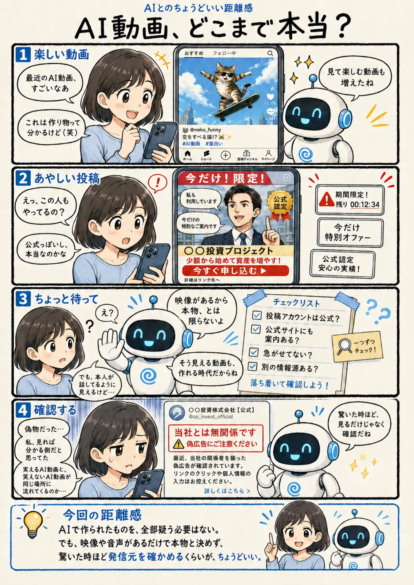

#073
AI動画、どこまで本当？
見れば分かると思っていたけれど。

メモ
AIで作られた動画には、気軽に笑えるものや、表現の可能性を広げる作品もたくさんあります。一方で、本物らしい映像や音声を使い、誰かを信じ込ませようとする投稿も同じSNS上に流れてきます。
特に、有名人の発言を装った広告や、「今だけ」「必ず得をする」と急がせる案内は、映像が自然だから安全とは限りません。AI生成かどうかを完璧に見抜くことより、誰が発信しているのか、公式サイトにも同じ案内があるのかを確認することが大切です。
すべてを疑いながら見る必要はありません。ただ、驚いた時や得をしそうだと感じた時に、すぐ反応せず一度立ち止まる習慣は、これからますます役立ちそうです。
今回の距離感
AIで作られたものを、全部疑う必要はない。でも、映像や音声があるだけで本物と決めず、驚いた時ほど発信元を確かめるくらいが、ちょうどいい。